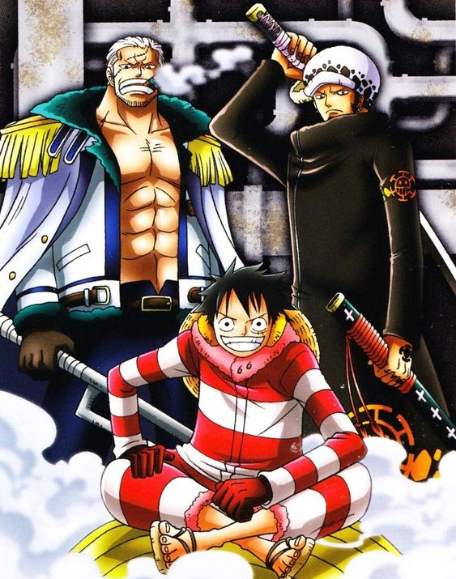

Episódios: 575 a 750
O 10º arco filler do anime dá início a esta saga mostrando os Piratas do Chapéu de Palha enfim chegando ao Novo Mundo. Lá, eles logo entram em conflito com a Marinha e a Nova Marinha. Nos primeiros episódios cânones, Luffy e sua equipe recebem um pedido de ajuda vindo da ilha Punk Hazard, no Novo Mundo. a mensagem é de um grupo de pessoas que estaria sob o ataque de um samurai. Perseguidos pelo Vice Admiral Smoker, os Chapéus de Palha chegam à ilha e se deparam com vários desafios. Novos e antigos inimigos estão no local, que também é sede de um dos laboratórios do Dr. Vegapunk. E o grupo de Luffy precisará lidar com os resultados de algumas de suas terríveis experiências. Mas Vegapunk tem concorrência. Caesar Clown quer se provar melhor do que o ex-colega com suas criações de armas de assassinato em massa e experiências ilegais. Neste arco, descobrimos ainda que o grupo Onze Supernovas vem causando anarquia por todo o Novo Mundo, ganhando a reputação de "Pior Geração" de piratas. Em uma nova aliança, os Chapéus de Palha e a Trafalgar Law conseguem capturar Caesar Clown. Eles o levam até Dressrosa, local onde pretendem derrubar o agora rei da nação, Lorde da Guerra do mar Donquixote Doflamingo. O que o grupo não esperava era que suas ações tivessem influência em tantos outros eventos no mundo. Em uma batalha que teve consequências por todo o planeta, vários grupos lutaram ao lado dos Chapéus de Palha. Foram eles: Beautiful Pirates, Barto Club, Happo Navy, New Giant Warrior Pirates, Yonta Maria Grand Fleet, Tontatta Pirates of the Tontatta e o recém-formado XXX Gym Martial Arts Alliance. Após a guerra, todos eles juraram lealdade a Luffy e sua tripulação, formando a chamada Grande Frota do Chapéu de Palha. Embora aliados, Luffy os deixe agir livremente.
